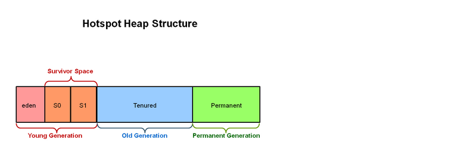
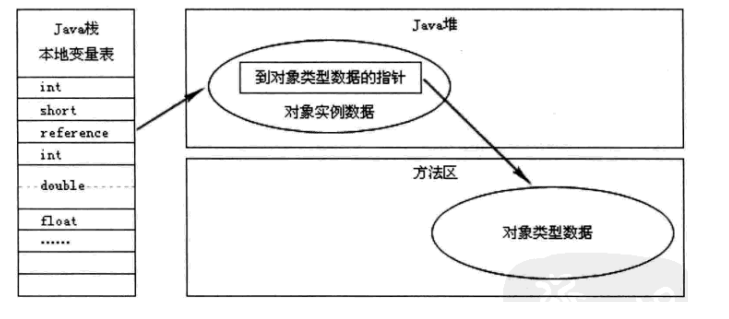
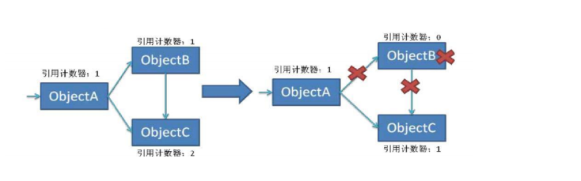
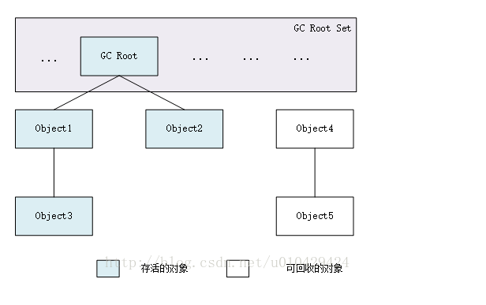

<!DOCTYPE html>


<html lang="zh-CN">


<head>
  <meta charset="utf-8" />
    
  <meta name="description" content="好记性不如烂笔头" />
  
  <meta name="viewport" content="width=device-width, initial-scale=1, maximum-scale=1" />
  <title>
    JVM内存管理机制 |  奋斗的皮皮虾
  </title>
  <meta name="generator" content="hexo-theme-ayer">
  
  <link rel="shortcut icon" href="/images/avatar.jpg" />
  
  
<link rel="stylesheet" href="/dist/main.css">

  
<link rel="stylesheet" href="https://cdn.jsdelivr.net/gh/Shen-Yu/cdn/css/remixicon.min.css">

  
<link rel="stylesheet" href="/css/custom.css">

  
  
<script src="https://cdn.jsdelivr.net/npm/pace-js@1.0.2/pace.min.js"></script>

  
  

  

<link rel="alternate" href="/atom.xml" title="奋斗的皮皮虾" type="application/atom+xml">
</head>

</html>

<body>
  <div id="app">
    
      <canvas class="fireworks"></canvas>
      <style>
        .fireworks {
          position: fixed;
          left: 0;
          top: 0;
          z-index: 99999;
          pointer-events: none;
        }
      </style>
      
      
    <main class="content on">
      <section class="outer">
  <article
  id="post-JVM内存管理机制"
  class="article article-type-post"
  itemscope
  itemprop="blogPost"
  data-scroll-reveal
>
  <div class="article-inner">
    
    <header class="article-header">
       
<h1 class="article-title sea-center" style="border-left:0" itemprop="name">
  JVM内存管理机制
</h1>
 

    </header>
     
    <div class="article-meta">
      <a href="/2019/11/17/JVM%E5%86%85%E5%AD%98%E7%AE%A1%E7%90%86%E6%9C%BA%E5%88%B6/" class="article-date">
  <time datetime="2019-11-17T15:30:58.000Z" itemprop="datePublished">2019-11-17</time>
</a> 
  <div class="article-category">
    <a class="article-category-link" href="/categories/JVM/">JVM</a>
  </div>
  
<div class="word_count">
    <span class="post-time">
        <span class="post-meta-item-icon">
            <i class="ri-quill-pen-line"></i>
            <span class="post-meta-item-text"> 字数统计:</span>
            <span class="post-count">4k</span>
        </span>
    </span>

    <span class="post-time">
        &nbsp; | &nbsp;
        <span class="post-meta-item-icon">
            <i class="ri-book-open-line"></i>
            <span class="post-meta-item-text"> 阅读时长≈</span>
            <span class="post-count">13 分钟</span>
        </span>
    </span>
</div>
 
    </div>
      
    <div class="tocbot"></div>


  
    <div class="article-entry" itemprop="articleBody">
       
  <h2 id="JVM内存管理机制"><a href="#JVM内存管理机制" class="headerlink" title="JVM内存管理机制"></a>JVM内存管理机制</h2><h3 id="一、概述"><a href="#一、概述" class="headerlink" title="一、概述"></a>一、概述</h3><p>Java GC（Garbage Collection，垃圾收集，垃圾回收）机制，是Java与C++/C的主要区别之一，作为Java开发者，一般不需要专门编写内存回收和垃圾清理代码，对内存泄露和溢出的问题，也不需要像C程序员那样战战兢兢。经过这么长时间的发展，Java GC机制已经日臻完善，几乎可以自动的为我们做绝大多数的事情。</p>
<p>虽然java不需要开发人员显示的分配和回收内存，这对开发人员确实降低了不少编程难度，但也可能带来一些副作用：</p>
<figure class="highlight java"><table><tr><td class="gutter"><pre><span class="line">1</span><br><span class="line">2</span><br><span class="line">3</span><br></pre></td><td class="code"><pre><span class="line"><span class="number">1</span>.有可能不知不觉浪费了很多内存</span><br><span class="line"><span class="number">2</span>.JVM花费过多时间来进行内存回收</span><br><span class="line"><span class="number">3</span>.内存泄露</span><br></pre></td></tr></table></figure>

<p>因此，作为一名java编程人员，必须学会JVM内存管理和回收机制，这可以帮助我们在日常工作中排查各种内存溢出或泄露问题，解决性能瓶颈，达到更高的并发量，写出更高效的程序。</p>
<h3 id="二、JVM内存空间管理"><a href="#二、JVM内存空间管理" class="headerlink" title="二、JVM内存空间管理"></a>二、JVM内存空间管理</h3><p> 根据JVM规范，JVM把内存划分了如下几个区域： </p>
<figure class="highlight java"><table><tr><td class="gutter"><pre><span class="line">1</span><br><span class="line">2</span><br><span class="line">3</span><br><span class="line">4</span><br><span class="line">5</span><br></pre></td><td class="code"><pre><span class="line"><span class="number">1</span>. 方法区</span><br><span class="line"><span class="number">2</span>. 堆区</span><br><span class="line"><span class="number">3</span>. 本地方法栈</span><br><span class="line"><span class="number">4</span>. 虚拟机栈</span><br><span class="line"><span class="number">5</span>. 程序计数器</span><br></pre></td></tr></table></figure>

<p>其中，方法区和堆是所有线程共享的。</p>
<p></p>
<h4 id="2-1-方法区"><a href="#2-1-方法区" class="headerlink" title="2.1 方法区"></a>2.1 方法区</h4><p>方法区存放了要加载的类的信息(如类名，修饰符)、类中的静态变量、final定义的常量、类中的field、方法信息，当开发人员调用类对象中的getName、isInterface等方法来获取信息时，这些数据都来源于方法区。方法区是全局共享的，在一定条件下它也会被GC。当方法区使用的内存超过它允许的大小时，就会抛出OutOfMemory：PermGen Space异常。</p>
<p>在Hotspot虚拟机中，这块区域对应的是Permanent Generation(持久代)，一般的，方法区上执行的垃圾收集是很少的，因此方法区又被称为持久代的原因之一，但这也不代表着在方法区上完全没有垃圾收集，其上的垃圾收集主要是针对常量池的内存回收和对已加载类的卸载。在方法区上进行垃圾收集，条件苛刻而且相当困难，关于其回后面再介绍。</p>
<p>运行时常量池（Runtime Constant Pool）是方法区的一部分，用于存储编译期就生成的字面常量、符号引用、翻译出来的直接引用（符号引用就是编码是用字符串表示某个变量、接口的位置，直接引用就是根据符号引用翻译出来的地址，将在类链接阶段完成翻译）；运行时常量池除了存储编译期常量外，也可以存储在运行时间产生的常量，比如String类的intern()方法，作用是String维护了一个常量池，如果调用的字符“abc”已经在常量池中，则返回池中的字符串地址，否则，新建一个常量加入池中，并返回地址。</p>
<p>JVM方法区的相关参数，最小值：–XX:PermSize；最大值 –XX:MaxPermSize。</p>
<h4 id="2-2-堆区"><a href="#2-2-堆区" class="headerlink" title="2.2 堆区"></a>2.2 堆区</h4><p>堆区是理解JavaGC机制最重要的区域。在JVM所管理的内存中，堆区是最大的一块，堆区也是JavaGC机制所管理的主要内存区域，堆区由所有线程共享，在虚拟机启动时创建。堆区用来存储对象实例及数组值，可以认为java中所有通过new创建的对象都在此分配。</p>
<p>对于堆区大小，可以通过参数-Xms和-Xmx来控制，-Xms为JVM启动时申请的最新heap内存，默认为物理内存的1/64但小于1GB;-Xmx为JVM可申请的最大Heap内存，默认为物理内存的1/4但小于1GB,默认当剩余堆空间小于40%时，JVM会增大Heap到-Xmx大小，可通过-XX:MinHeapFreeRadio参数来控制这个比例；当空余堆内存大于70%时，JVM会减小Heap大小到-Xms指定大小，可通过-XX:MaxHeapFreeRatio来指定这个比例。对于系统而言，为了避免在运行期间频繁的调整Heap大小，我们通常将-Xms和-Xmx设置成一样。</p>
<p>为了让内存回收更加高效（后面会具体讲为何要分代划分），从Sun JDK 1.2开始对堆采用了分代管理方式，如下图所示：</p>
<p></p>
<h5 id="年轻代（Young-Generation）"><a href="#年轻代（Young-Generation）" class="headerlink" title="年轻代（Young Generation）"></a>年轻代（Young Generation）</h5><p>对象在被创建时，内存首先是在年轻代进行分配（注意，大对象可以直接在老年代分配）。当年轻代需要回收时会触发Minor GC(也称作Young GC)。</p>
<p>年轻代由Eden Space和两块相同大小的Survivor Space（又称S0和S1）构成，可通过-Xmn参数来调整新生代大小，也可通过-XX:SurvivorRadio来调整Eden Space和Survivor Space大小。不同的GC方式会按不同的方式来按此值划分Eden Space和Survivor Space，有些GC方式还会根据运行状况来动态调整Eden、S0、S1的大小。</p>
<p>年轻代的Eden区内存是连续的，所以其分配会非常快；同样Eden区的回收也非常快（因为大部分情况下Eden区对象存活时间非常短，而Eden区采用的复制回收算法，此算法在存活对象比例很少的情况下非常高效，后面会详细介绍）。</p>
<p>如果在执行垃圾回收之后，仍没有足够的内存分配，也不能再扩展，将会抛出OutOfMemoryError:Java Heap Space异常。</p>
<h5 id="老年代（Old-Generation）"><a href="#老年代（Old-Generation）" class="headerlink" title="老年代（Old Generation）"></a>老年代（Old Generation）</h5><p>老年代用于存放在年轻代中经多次垃圾回收仍然存活的对象，可以理解为比较老一点的对象，例如缓存对象；新建的对象也有可能在老年代上直接分配内存，这主要有两种情况：一种为大对象，可以通过启动参数设置-XX:PretenureSizeThreshold=1024，表示超过多大时就不在年轻代分配，而是直接在老年代分配。此参数在年轻代采用Parallel Scavenge GC时无效，因为其会根据运行情况自己决定什么对象直接在老年代上分配内存；另一种为大的数组对象，且数组对象中无引用外部对象。</p>
<p>当老年代满了的时候就需要对老年代进行垃圾回收，老年代的垃圾回收称作Major GC（也称作Full GC）。</p>
<p>老年代所占用的内存大小为-Xmx对应的值减去-Xmn对应的值。</p>
<h4 id="2-3-本地方法栈（Native-Method-Stack）"><a href="#2-3-本地方法栈（Native-Method-Stack）" class="headerlink" title="2.3 本地方法栈（Native Method Stack）"></a>2.3 本地方法栈（Native Method Stack）</h4><p>本地方法栈用于支持native方法的执行，存储了每个native方法调用的状态。本地方法栈和虚拟机方法栈运行机制一致，它们唯一的区别就是，虚拟机栈是执行Java方法的，而本地方法栈是用来执行native方法的，在很多虚拟机中（如Sun的JDK默认的HotSpot虚拟机），会将本地方法栈与虚拟机栈放在一起使用。</p>
<h4 id="2-4-程序计数器（Program-Counter-Register）"><a href="#2-4-程序计数器（Program-Counter-Register）" class="headerlink" title="2.4 程序计数器（Program Counter Register）"></a>2.4 程序计数器（Program Counter Register）</h4><p>程序计数器是一个比较小的内存区域，可能是CPU寄存器或者操作系统内存，其主要用于指示当前线程所执行的字节码执行到了第几行，可以理解为是当前线程的行号指示器。字节码解释器在工作时，会通过改变这个计数器的值来取下一条语句指令。 每个程序计数器只用来记录一个线程的行号，所以它是线程私有（一个线程就有一个程序计数器）的。</p>
<p>如果程序执行的是一个Java方法，则计数器记录的是正在执行的虚拟机字节码指令地址；如果正在执行的是一个本地（native，由C语言编写完成）方法，则计数器的值为Undefined，由于程序计数器只是记录当前指令地址，所以不存在内存溢出的情况，因此，程序计数器也是所有JVM内存区域中唯一一个没有定义OutOfMemoryError的区域。</p>
<h4 id="2-5-虚拟机栈（JVM-Stack）"><a href="#2-5-虚拟机栈（JVM-Stack）" class="headerlink" title="2.5 虚拟机栈（JVM Stack）"></a>2.5 虚拟机栈（JVM Stack）</h4><p>虚拟机栈占用的是操作系统内存，每个线程都对应着一个虚拟机栈，它是线程私有的，而且分配非常高效。一个线程的每个方法在执行的同时，都会创建一个栈帧（Statck Frame），栈帧中存储的有局部变量表、操作站、动态链接、方法出口等，当方法被调用时，栈帧在JVM栈中入栈，当方法执行完成时，栈帧出栈。</p>
<p>局部变量表中存储着方法的相关局部变量，包括各种基本数据类型，对象的引用，返回地址等。在局部变量表中，只有long和double类型会占用2个局部变量空间（Slot，对于32位机器，一个Slot就是32个bit），其它都是1个Slot。需要注意的是，局部变量表是在编译时就已经确定好的，方法运行所需要分配的空间在栈帧中是完全确定的，在方法的生命周期内都不会改变。</p>
<p>虚拟机栈中定义了两种异常，如果线程调用的栈深度大于虚拟机允许的最大深度，则抛出StatckOverFlowError（栈溢出）；不过多数Java虚拟机都允许动态扩展虚拟机栈的大小(有少部分是固定长度的)，所以线程可以一直申请栈，直到内存不足，此时，会抛出OutOfMemoryError（内存溢出）。</p>
<h4 id="2-6-Java对象访问方式"><a href="#2-6-Java对象访问方式" class="headerlink" title="2.6 Java对象访问方式"></a>2.6 Java对象访问方式</h4><p>一般来说，一个Java的引用访问涉及到3个内存区域：JVM栈，堆，方法区。以最简单的本地变量引用：Object objRef = new Object()为例：</p>
<p>Object objRef 表示一个本地引用，存储在JVM栈的本地变量表中，表示一个reference类型数据；<br>new Object()作为实例对象数据存储在堆中；<br>堆中还记录了能够查询到此Object对象的类型数据（接口、方法、field、对象类型等）的地址，实际的数据则存储在方法区中；<br>在Java虚拟机规范中，只规定了指向对象的引用，对于通过reference类型引用访问具体对象的方式并未做规定，不过目前主流的实现方式主要有两种：</p>
<h5 id="2-6-1-通过句柄访问"><a href="#2-6-1-通过句柄访问" class="headerlink" title="2.6.1 通过句柄访问"></a>2.6.1 通过句柄访问</h5><p>通过句柄访问的实现方式中，JVM堆中会划分单独一块内存区域作为句柄池，句柄池中存储了对象实例数据（在堆中）和对象类型数据（在方法区中）的指针。这种实现方法由于用句柄表示地址，因此十分稳定。</p>
<p></p>
<h5 id="2-6-2-通过直接指针访问"><a href="#2-6-2-通过直接指针访问" class="headerlink" title="2.6.2 通过直接指针访问"></a>2.6.2 通过直接指针访问</h5><p>通过直接指针访问的方式中，reference中存储的就是对象在堆中的实际地址，在堆中存储的对象信息中包含了在方法区中的相应类型数据。这种方法最大的优势是速度快，在HotSpot虚拟机中用的就是这种方式。<br></p>
<h3 id="三、JVM内存分配"><a href="#三、JVM内存分配" class="headerlink" title="三、JVM内存分配"></a>三、JVM内存分配</h3><p>Java对象所占用的内存主要在堆上实现，因为堆是线程共享的，因此在堆上分配内存时需要进行加锁，这就导致了创建对象的开销比较大。当堆上空间不足时，会出发GC，如果GC后空间仍然不足，则会抛出OutOfMemory异常。</p>
<p>为了提升内存分配效率，在年轻代的Eden区HotSpot虚拟机使用了两种技术来加快内存分配 ，分别是bump-the-pointer和TLAB（Thread-Local Allocation Buffers）。由于Eden区是连续的，因此bump-the-pointer技术的核心就是跟踪最后创建的一个对象，在对象创建时，只需要检查最后一个对象后面是否有足够的内存即可，从而大大加快内存分配速度；而对于TLAB技术是对于多线程而言的， 它会为每个新创建的线程在新生代的Eden Space上分配一块独立的空间，这块空间称为TLAB（Thread Local Allocation Buffer），其大小由JVM根据运行情况计算而得。可通过-XX:TLABWasteTargetPercent来设置其可占用的Eden Space的百分比，默认是1%。在TLAB上分配内存不需要加锁，一般JVM会优先在TLAB上分配内存，如果对象过大或者TLAB空间已经用完，则仍然在堆上进行分配。因此，在编写程序时，多个小对象比大的对象分配起来效率更高。可在启动参数上增加-XX:+PrintTLAB来查看TLAB空间的使用情况。</p>
<p> </p>
<p>对象如果在年轻代存活了足够长的时间而没有被清理掉（即在几次Minor GC后存活了下来），则会被复制到年老代，年老代的空间一般比年轻代大，能存放更多的对象，在年老代上发生的GC次数也比年轻代少。当年老代内存不足时，将执行Major GC，也叫 Full GC。</p>
<p>可以使用-XX:+UseAdaptiveSizePolicy开关来控制是否采用动态控制策略，如果动态控制，则动态调整Java堆中各个区域的大小以及进入老年代的年龄。</p>
<p>如果对象比较大（比如长字符串或大数组），年轻代空间不足，则大对象会直接分配到老年代上（大对象可能触发提前GC，应少用，更应避免使用短命的大对象）。用 -XX:PretenureSizeThreshold来控制直接升入老年代的对象大小，大于这个值的对象会直接分配在老年代上。</p>
<h3 id="四、内存的回收方式"><a href="#四、内存的回收方式" class="headerlink" title="四、内存的回收方式"></a>四、内存的回收方式</h3><p>JVM通过GC来回收堆和方法区中的内存，这个过程是自动执行的。说到Java GC机制，其主要完成3件事：确定哪些内存需要回收；确定什么时候需要执行GC；如何执行GC。JVM主要采用收集器的方式实现GC，主要的收集器有引用计数收集器和跟踪收集器。</p>
<h4 id="4-1-引用计数收集器"><a href="#4-1-引用计数收集器" class="headerlink" title="4.1 引用计数收集器"></a>4.1 引用计数收集器</h4><p>引用计数器采用分散式管理方式，通过计数器记录对象是否被引用。当计数器为0时，说明此对象已经不再被使用，可进行回收，如图所示：</p>
<p></p>
<p>在上图中，ObjectA释放了对ObjectB的引用后，ObjectB的引用计数器变为0，此时可回收ObjectB所占有的内存。</p>
<p>引用计数器需要在每次对象赋值时进行引用计数器的增减，他有一定消耗。另外，引用计数器对于循环引用的场景没有办法实现回收。例如在上面的例子中，如果ObjectB和ObjectC互相引用，那么即使ObjectA释放了对ObjectB和ObjectC的引用，也无法回收ObjectB、ObjectC，因此对于java这种会形成复杂引用关系的语言而言，引用计数器是非常不适合的，SunJDK在实现GC时也未采用这种方式。</p>
<h4 id="4-2可达性分析"><a href="#4-2可达性分析" class="headerlink" title="4.2可达性分析"></a><strong>4.2可达性分析</strong></h4><p>设立若干根对象（GC Root），每个对象都是一个子节点，当一个对象找不到根时，就认为该对象不可达。</p>
<p></p>
<p>没有一条从根到Object4 和 Object5的路径，说明这两个对象到根是不可达的，可以被回收</p>
<p>补充：java中，可以作为GC Roots的对象包括：</p>
<p><strong>java虚拟机栈中引用的对象</strong><br>方法区中静态变量引用的对象和常量引用的对象</p>
<p>本地方法栈中引用的对象</p>
<pre><code class="JVM虚拟机不采用引用计数法，只通过可达性分析进行垃圾回收"></code></pre>
 
      <!-- reward -->
      
      <div id="reward-btn">
        打赏
      </div>
      
    </div>
    

    <!-- copyright -->
    
    <div class="declare">
      <ul class="post-copyright">
        <li>
          <i class="ri-copyright-line"></i>
          <strong>版权声明： </strong>
          本博客所有文章除特别声明外，著作权归作者所有。转载请注明出处！
        </li>
      </ul>
    </div>
    
    <footer class="article-footer">
       
<div class="share-btn">
      <span class="share-sns share-outer">
        <i class="ri-share-forward-line"></i>
        分享
      </span>
      <div class="share-wrap">
        <i class="arrow"></i>
        <div class="share-icons">
          
          <a class="weibo share-sns" href="javascript:;" data-type="weibo">
            <i class="ri-weibo-fill"></i>
          </a>
          <a class="weixin share-sns wxFab" href="javascript:;" data-type="weixin">
            <i class="ri-wechat-fill"></i>
          </a>
          <a class="qq share-sns" href="javascript:;" data-type="qq">
            <i class="ri-qq-fill"></i>
          </a>
          <a class="douban share-sns" href="javascript:;" data-type="douban">
            <i class="ri-douban-line"></i>
          </a>
          <!-- <a class="qzone share-sns" href="javascript:;" data-type="qzone">
            <i class="icon icon-qzone"></i>
          </a> -->
          
          <a class="facebook share-sns" href="javascript:;" data-type="facebook">
            <i class="ri-facebook-circle-fill"></i>
          </a>
          <a class="twitter share-sns" href="javascript:;" data-type="twitter">
            <i class="ri-twitter-fill"></i>
          </a>
          <a class="google share-sns" href="javascript:;" data-type="google">
            <i class="ri-google-fill"></i>
          </a>
        </div>
      </div>
</div>

<div class="wx-share-modal">
    <a class="modal-close" href="javascript:;"><i class="ri-close-circle-line"></i></a>
    <p>扫一扫，分享到微信</p>
    <div class="wx-qrcode">
      
    </div>
</div>

<div id="share-mask"></div>  
  <ul class="article-tag-list" itemprop="keywords"><li class="article-tag-list-item"><a class="article-tag-list-link" href="/tags/JVM%E5%86%85%E5%AD%98%E7%AE%A1%E7%90%86/" rel="tag">JVM内存管理</a></li></ul>

    </footer>
  </div>

   
  <nav class="article-nav">
    
      <a href="/2019/11/28/AQS%E5%88%86%E6%9E%90/" class="article-nav-link">
        <strong class="article-nav-caption">上一篇</strong>
        <div class="article-nav-title">
          
            AQS分析
          
        </div>
      </a>
    
    
      <a href="/2019/11/17/%E5%9E%83%E5%9C%BE%E5%9B%9E%E6%94%B6%E7%AE%97%E6%B3%95%E5%8F%8A%E5%88%86%E4%BB%A3%E5%9E%83%E5%9C%BE%E6%94%B6%E9%9B%86%E5%99%A8/" class="article-nav-link">
        <strong class="article-nav-caption">下一篇</strong>
        <div class="article-nav-title">垃圾回收算法及分代垃圾收集器</div>
      </a>
    
  </nav>

   
<!-- valine评论 -->
<div id="vcomments-box">
  <div id="vcomments"></div>
</div>
<script src="//cdn1.lncld.net/static/js/3.0.4/av-min.js"></script>
<script src="https://cdn.jsdelivr.net/npm/valine@1.4.14/dist/Valine.min.js"></script>
<script>
  new Valine({
    el: "#vcomments",
    app_id: "SctsT8yefP0D7VSA3skojjQJ-gzGzoHsz",
    app_key: "m5U9PA8tUiK3NJFScBqsQ8pg",
    path: window.location.pathname,
    avatar: "mp",
    placeholder: "给我的文章加点评论吧~",
    recordIP: true,
  });
  const infoEle = document.querySelector("#vcomments .info");
  if (infoEle && infoEle.childNodes && infoEle.childNodes.length > 0) {
    infoEle.childNodes.forEach(function (item) {
      item.parentNode.removeChild(item);
    });
  }
</script>
<style>
  #vcomments-box {
    padding: 5px 30px;
  }

  @media screen and (max-width: 800px) {
    #vcomments-box {
      padding: 5px 0px;
    }
  }

  #vcomments-box #vcomments {
    background-color: #fff;
  }

  .v .vlist .vcard .vh {
    padding-right: 20px;
  }

  .v .vlist .vcard {
    padding-left: 10px;
  }
</style>

 
     
</article>

</section>
      <footer class="footer">
  <div class="outer">
    <ul>
      <li>
        Copyrights &copy;
        2019-2020
        <i class="ri-heart-fill heart_icon"></i> 张朝阳
      </li>
    </ul>
    <ul>
      <li>
        
        
        
        由 <a href="https://hexo.io" target="_blank">Hexo</a> 强力驱动
        <span class="division">|</span>
        主题 - <a href="https://github.com/Shen-Yu/hexo-theme-ayer" target="_blank">Ayer</a>
        
      </li>
    </ul>
    <ul>
      <li>
        
        
        <span>
  <span><i class="ri-user-3-fill"></i>访问人数:<span id="busuanzi_value_site_uv"></span></s>
  <span class="division">|</span>
  <span><i class="ri-eye-fill"></i>浏览次数:<span id="busuanzi_value_page_pv"></span></span>
</span>
        
      </li>
    </ul>
    <ul>
      
    </ul>
    <ul>
      <li>
        <!-- cnzz统计 -->
        
        <script type="text/javascript" src=''></script>
        
      </li>
    </ul>
  </div>
</footer>
      <div class="float_btns">
        <div class="totop" id="totop">
  <i class="ri-arrow-up-line"></i>
</div>

<div class="todark" id="todark">
  <i class="ri-moon-line"></i>
</div>

      </div>
    </main>
    <aside class="sidebar on">
      <button class="navbar-toggle"></button>
<nav class="navbar">
  
  <div class="logo">
    <a href="/"></a>
  </div>
  
  <ul class="nav nav-main">
    
    <li class="nav-item">
      <a class="nav-item-link" href="/">主页</a>
    </li>
    
    <li class="nav-item">
      <a class="nav-item-link" href="/archives">归档</a>
    </li>
    
    <li class="nav-item">
      <a class="nav-item-link" href="/categories">分类</a>
    </li>
    
    <li class="nav-item">
      <a class="nav-item-link" href="/tags">标签</a>
    </li>
    
    <li class="nav-item">
      <a class="nav-item-link" href="http://shenyu-vip.lofter.com" target="_blank" rel="noopener">摄影</a>
    </li>
    
    <li class="nav-item">
      <a class="nav-item-link" href="/tags/%E6%97%85%E8%A1%8C/">旅行</a>
    </li>
    
    <li class="nav-item">
      <a class="nav-item-link" href="/2019/about">关于我</a>
    </li>
    
  </ul>
</nav>
<nav class="navbar navbar-bottom">
  <ul class="nav">
    <li class="nav-item">
      
      <a class="nav-item-link nav-item-search"  title="搜索">
        <i class="ri-search-line"></i>
      </a>
      
      
      <a class="nav-item-link" target="_blank" href="/atom.xml" title="RSS Feed">
        <i class="ri-rss-line"></i>
      </a>
      
    </li>
  </ul>
</nav>
<div class="search-form-wrap">
  <div class="local-search local-search-plugin">
  <input type="search" id="local-search-input" class="local-search-input" placeholder="Search...">
  <div id="local-search-result" class="local-search-result"></div>
</div>
</div>
    </aside>
    <script>
      if (window.matchMedia("(max-width: 768px)").matches) {
        document.querySelector('.content').classList.remove('on');
        document.querySelector('.sidebar').classList.remove('on');
      }
    </script>
    <div id="mask"></div>

<!-- #reward -->
<div id="reward">
  <span class="close"><i class="ri-close-line"></i></span>
  <p class="reward-p"><i class="ri-cup-line"></i>请我喝杯咖啡吧~</p>
  <div class="reward-box">
    
    <div class="reward-item">
      
      <span class="reward-type">支付宝</span>
    </div>
    
    
    <div class="reward-item">
      
      <span class="reward-type">微信</span>
    </div>
    
  </div>
</div>
    
<script src="/js/jquery-2.0.3.min.js"></script>


<script src="/js/lazyload.min.js"></script>

<!-- Subtitle -->

<!-- Tocbot -->


<script src="/js/tocbot.min.js"></script>

<script>
  tocbot.init({
    tocSelector: '.tocbot',
    contentSelector: '.article-entry',
    headingSelector: 'h1, h2, h3, h4, h5, h6',
    hasInnerContainers: true,
    scrollSmooth: true,
    scrollContainer: 'main',
    positionFixedSelector: '.tocbot',
    positionFixedClass: 'is-position-fixed',
    fixedSidebarOffset: 'auto'
  });
</script>

<script src="https://cdn.jsdelivr.net/npm/jquery-modal@0.9.2/jquery.modal.min.js"></script>
<link rel="stylesheet" href="https://cdn.jsdelivr.net/npm/jquery-modal@0.9.2/jquery.modal.min.css">
<script src="https://cdn.jsdelivr.net/npm/justifiedGallery@3.7.0/dist/js/jquery.justifiedGallery.min.js"></script>

<script src="/dist/main.js"></script>

<!-- ImageViewer -->

<!-- Root element of PhotoSwipe. Must have class pswp. -->
<div class="pswp" tabindex="-1" role="dialog" aria-hidden="true">

    <!-- Background of PhotoSwipe. 
         It's a separate element as animating opacity is faster than rgba(). -->
    <div class="pswp__bg"></div>

    <!-- Slides wrapper with overflow:hidden. -->
    <div class="pswp__scroll-wrap">

        <!-- Container that holds slides. 
            PhotoSwipe keeps only 3 of them in the DOM to save memory.
            Don't modify these 3 pswp__item elements, data is added later on. -->
        <div class="pswp__container">
            <div class="pswp__item"></div>
            <div class="pswp__item"></div>
            <div class="pswp__item"></div>
        </div>

        <!-- Default (PhotoSwipeUI_Default) interface on top of sliding area. Can be changed. -->
        <div class="pswp__ui pswp__ui--hidden">

            <div class="pswp__top-bar">

                <!--  Controls are self-explanatory. Order can be changed. -->

                <div class="pswp__counter"></div>

                <button class="pswp__button pswp__button--close" title="Close (Esc)"></button>

                <button class="pswp__button pswp__button--share" style="display:none" title="Share"></button>

                <button class="pswp__button pswp__button--fs" title="Toggle fullscreen"></button>

                <button class="pswp__button pswp__button--zoom" title="Zoom in/out"></button>

                <!-- Preloader demo http://codepen.io/dimsemenov/pen/yyBWoR -->
                <!-- element will get class pswp__preloader--active when preloader is running -->
                <div class="pswp__preloader">
                    <div class="pswp__preloader__icn">
                        <div class="pswp__preloader__cut">
                            <div class="pswp__preloader__donut"></div>
                        </div>
                    </div>
                </div>
            </div>

            <div class="pswp__share-modal pswp__share-modal--hidden pswp__single-tap">
                <div class="pswp__share-tooltip"></div>
            </div>

            <button class="pswp__button pswp__button--arrow--left" title="Previous (arrow left)">
            </button>

            <button class="pswp__button pswp__button--arrow--right" title="Next (arrow right)">
            </button>

            <div class="pswp__caption">
                <div class="pswp__caption__center"></div>
            </div>

        </div>

    </div>

</div>

<link rel="stylesheet" href="https://cdn.jsdelivr.net/npm/photoswipe@4.1.3/dist/photoswipe.min.css">
<link rel="stylesheet" href="https://cdn.jsdelivr.net/npm/photoswipe@4.1.3/dist/default-skin/default-skin.min.css">
<script src="https://cdn.jsdelivr.net/npm/photoswipe@4.1.3/dist/photoswipe.min.js"></script>
<script src="https://cdn.jsdelivr.net/npm/photoswipe@4.1.3/dist/photoswipe-ui-default.min.js"></script>

<script>
    function viewer_init() {
        let pswpElement = document.querySelectorAll('.pswp')[0];
        let $imgArr = document.querySelectorAll(('.article-entry img:not(.reward-img)'))

        $imgArr.forEach(($em, i) => {
            $em.onclick = () => {
                // slider展开状态
                // todo: 这样不好，后面改成状态
                if (document.querySelector('.left-col.show')) return
                let items = []
                $imgArr.forEach(($em2, i2) => {
                    let img = $em2.getAttribute('data-idx', i2)
                    let src = $em2.getAttribute('data-target') || $em2.getAttribute('src')
                    let title = $em2.getAttribute('alt')
                    // 获得原图尺寸
                    const image = new Image()
                    image.src = src
                    items.push({
                        src: src,
                        w: image.width || $em2.width,
                        h: image.height || $em2.height,
                        title: title
                    })
                })
                var gallery = new PhotoSwipe(pswpElement, PhotoSwipeUI_Default, items, {
                    index: parseInt(i)
                });
                gallery.init()
            }
        })
    }
    viewer_init()
</script>

<!-- MathJax -->

<script type="text/x-mathjax-config">
  MathJax.Hub.Config({
      tex2jax: {
          inlineMath: [ ['$','$'], ["\\(","\\)"]  ],
          processEscapes: true,
          skipTags: ['script', 'noscript', 'style', 'textarea', 'pre', 'code']
      }
  });

  MathJax.Hub.Queue(function() {
      var all = MathJax.Hub.getAllJax(), i;
      for(i=0; i < all.length; i += 1) {
          all[i].SourceElement().parentNode.className += ' has-jax';
      }
  });
</script>

<script src="https://cdn.jsdelivr.net/npm/mathjax@2.7.6/unpacked/MathJax.js?config=TeX-AMS-MML_HTMLorMML"></script>
<script>
  var ayerConfig = {
    mathjax: true
  }
</script>

<!-- Katex -->

<!-- busuanzi  -->


<script src="/js/busuanzi-2.3.pure.min.js"></script>


<!-- ClickLove -->

<!-- ClickBoom1 -->

<script src="https://cdn.jsdelivr.net/npm/animejs@latest/anime.min.js"></script>

<script src="/js/clickBoom1.js"></script>


<!-- ClickBoom2 -->

<!-- CodeCopy -->


<link rel="stylesheet" href="/css/clipboard.css">

<script src="https://cdn.jsdelivr.net/npm/clipboard@2/dist/clipboard.min.js"></script>
<script>
  function wait(callback, seconds) {
    var timelag = null;
    timelag = window.setTimeout(callback, seconds);
  }
  !function (e, t, a) {
    var initCopyCode = function(){
      var copyHtml = '';
      copyHtml += '<button class="btn-copy" data-clipboard-snippet="">';
      copyHtml += '<i class="ri-file-copy-2-line"></i><span>COPY</span>';
      copyHtml += '</button>';
      $(".highlight .code pre").before(copyHtml);
      $(".article pre code").before(copyHtml);
      var clipboard = new ClipboardJS('.btn-copy', {
        target: function(trigger) {
          return trigger.nextElementSibling;
        }
      });
      clipboard.on('success', function(e) {
        let $btn = $(e.trigger);
        $btn.addClass('copied');
        let $icon = $($btn.find('i'));
        $icon.removeClass('ri-file-copy-2-line');
        $icon.addClass('ri-checkbox-circle-line');
        let $span = $($btn.find('span'));
        $span[0].innerText = 'COPIED';
        
        wait(function () { // 等待两秒钟后恢复
          $icon.removeClass('ri-checkbox-circle-line');
          $icon.addClass('ri-file-copy-2-line');
          $span[0].innerText = 'COPY';
        }, 2000);
      });
      clipboard.on('error', function(e) {
        e.clearSelection();
        let $btn = $(e.trigger);
        $btn.addClass('copy-failed');
        let $icon = $($btn.find('i'));
        $icon.removeClass('ri-file-copy-2-line');
        $icon.addClass('ri-time-line');
        let $span = $($btn.find('span'));
        $span[0].innerText = 'COPY FAILED';
        
        wait(function () { // 等待两秒钟后恢复
          $icon.removeClass('ri-time-line');
          $icon.addClass('ri-file-copy-2-line');
          $span[0].innerText = 'COPY';
        }, 2000);
      });
    }
    initCopyCode();
  }(window, document);
</script>


<!-- CanvasBackground -->


    
    <div id="music">
    
    
    
    <iframe frameborder="no" border="1" marginwidth="0" marginheight="0" width="200" height="86"
        src="//music.163.com/outchain/player?type=2&id=37653063&auto=1&height=66"></iframe>
</div>

<style>
    #music {
        position: fixed;
        right: 15px;
        bottom: 0;
        z-index: 998;
    }
</style>
    
  </div>
</body>

</html>